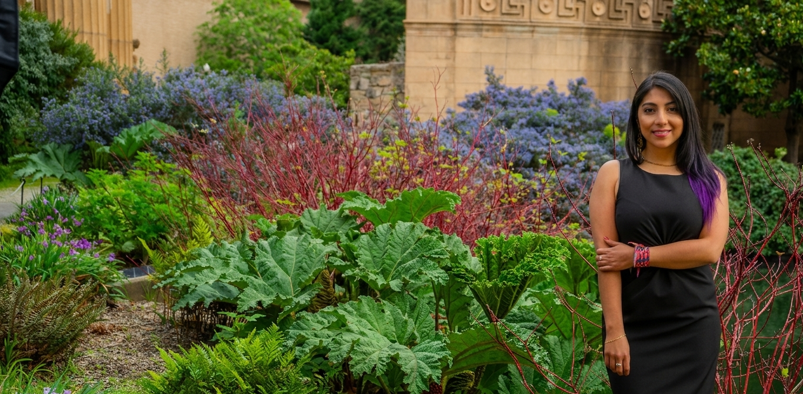

Diana Moreno Santillán
Home
Research
Bat Immunity
Diving adaptations
TE evolution
Blue whale Immunity
Collaborations
Leadership and outreach
Mujeres Latinas en STEM
Ciencia Pal Barrio
Postdoc association
COPUS
Publications
Media
News
CV
Contact

Photo by:
[Nicolas Novoa, SDP audiovisual]
Diana D. Moreno Santillán
My research is about